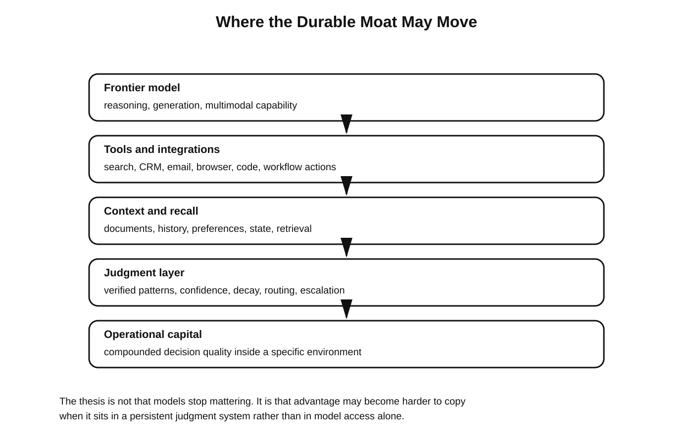

when-machine-judgment-becomes-capital-09
Source asciidoc: `docs/article/when-machine-judgment-becomes-capital-09.adoc` == Why the Moat May Shift Away from the Model
The most important strategic conclusion is simple.
If frontier models keep improving and diffusing, then raw model access will become a weaker moat. Cost, latency, personality, and reasoning style will still matter, but they will matter less than many founders hope. The more durable advantage may sit one layer above the model: in the persistent judgment system that survives model swaps and grows more valuable with every verified cycle.

That is a more defensible position because it is closer to how firms actually build hard-to-copy capability. They do not win only because they purchased a tool. They win because they integrated a tool into routines, feedback loops, expertise, and accumulated operational learning.
The same may prove true for AI. The winners may not be the teams with access to the newest model on day one. They may be the teams that best compound machine judgment on day two hundred.